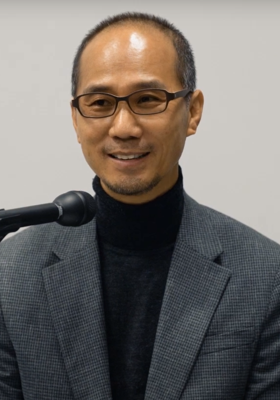

"아들되어 예배하고
제자로 좋은 세상 만들어 갑니다"
(창 1:28)
인사말
김태범 목사의 아들로 2대째 목사로 사는 김인승 목사는 두드림 교회(DoDream) 담
임 목사이며 smd344 선교단 Founder로 현 대표이면서 미주 smd344 선교단과 애
틀랜타 NCC을 지키는 ‘회당지기’입니다.
학교는 성결대와 서울신대(M-div)를 거쳐 한양대 교육 대학원(MED)에서 석사를 취
득했고 최종학력은 Gordon-Conwell Theological Seminary 목회학 박사(D-Min)를
취득하였습니다.
김인승 목사는, 지난 30년 간 제자 훈련을 하여 제자를 세우고 있으며 세상에 그리
스도의 문화를 세우는 일들을 시도하고 있습니다. 집필하여 책자 과정에 있는 저서
로는 ‘성막 공과 시리즈 1권에서 4권’과 강의 중심의 리더 공과 ‘삶과 사역’이 있습
니다. 성막 공과 시리즈는 현재 영어판, 스페니쉬판, 미얀마판, 캄보디아판, 라오스
판, 베트남판으로 번역되었으며 현재 중국어판을 번역하고 있습니다.

김인승 목사는 가정, 공동체(교회 포함), 사회, 선교, 그리고 봉사의 현장들을 담당해
야 한다는 ‘크리스천의 5 지역 섬김(Service for 5 Fields)’ 원칙에 따라 지난 10년
간 애틀랜타 청소년 Center에 속한 Help Line을 통해 가정 및 청소년 상담을 담당
하였고 5년 간, 크리스챤 타임즈에 ‘시력교정’이란 글을 기고했고 2년 간 인터넷 방
송에서 생방송으로 ‘찬양과 말씀’을 진행했으며 10년 간, 애틀랜타 라디오 ‘김인승의
맘 상한 청소년을 위하여’를 통해 애틀랜타 가정과 아이들을 위해 방송하였습니다.
김인승 목사는 예수님의 제자 사역을 본받아 30여년 간 목회와 제자 훈련과 공동체
를 했으며 단기 선교 11기, 중장기 3기 그리고 장기 1기를 파송했습니다.